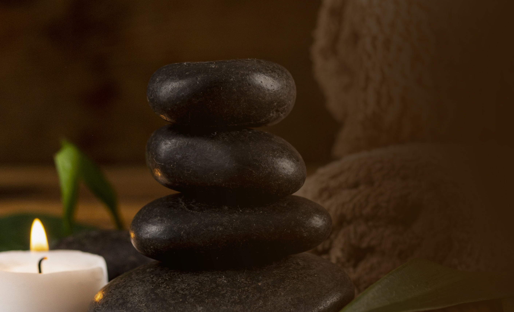
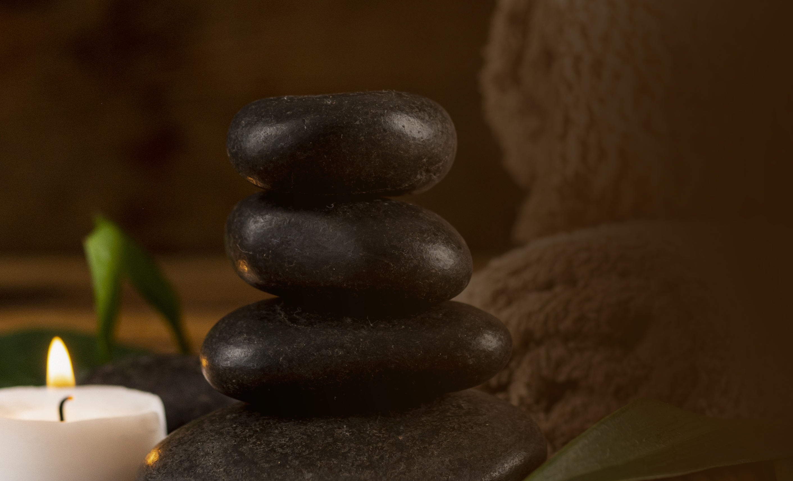

Le massage médical détend les muscles, favorise la circulation sanguine, stimule le métabolisme, active les capacités d'autoguérison et procure du bien-être. Le massage médical en soi n'est pas une forme de thérapie spécifique.
Développé par le docteur suédois Per Henrik Ling il y a deux siècles, le massage
suédois vise à détendre les muscles en profondeur grâce à des gestes doux et
fermes à la fois. Une technique qui soulage les tensions musculaires et favorise
la souplesse des articulations.
Ce massage est surtout destiné aux sportifs dont les muscles sont souvent trop
sollicités. Dans certains pays commela Suède, ce massage est très souvent utilisé
à des fins thérapeutiques lorsqu’il est pratiqué par des ostéopathes ou des kinés.
Le stress et les crampes laissent place à la souplesse et la zénitude. Le massage
suédois convient également aux personnes dont l’activité physique est
insuffisante car il favorise la circulation sanguine.
De nombreux essais cliniques témoignent de l’efficacité de cette approche. Ce
massage est notamment recommandé en cas de douleurs lombaires ou dorsales
aiguës ou chroniques. Ses bienfaits ont été reconnus dans le domaine
postopératoire ou pour soulager de l’arthrose. Grâce aux mouvements vigoureux
réalisés pendant le massage, la circulation sanguine augmente favorisant ainsi
une plus grande élasticité musculaire.
Le drainage lymphatique est une technique de massage qui permet de stimuler la circulation de la lymphe. Il est utilisé à des fins médicales ou esthétiques. Cette méthode repose sur des mouvements lents et doux, effectués dans le sens de la circulation lymphatique avec des variations de pression
Le massage aux pierres chaudes offre alors une rencontre privilégiée avec l'énergie terrestre. Sur le corps, elles sont positionnées sur les points sensibles pour apporter un effet relaxant immédiat. Sur le front, le ventre, les pieds ou les mains, votre corps appréciera les vertus de la thermothérapie
Les professionnels de la kinésithérapie et de la massothérapie ont connaissance et tirent profit des propriétés bénéfiques des plantes depuis des décennies. En effet, les huiles essentielles issues de plantes et fleurs peuvent constituer de véritables alliés pour soulager les douleurs, traumatismes sous forme d'application cutanée et massages. Afin de pouvoir apporter une solution adaptée à tous les besoins et surtout économique pour le praticien, composer des produits de massages à partir d'une base neutre avec adjonction d'une huile essentielle permet de s'adapter à chaque besoin et au volume adéquat.
Quand on pense au massage prénatal réalisé sur la femme enceinte,
nous pensons d’abord aux bienfaits sur la future maman, c’est pour son
bien-être qu’il existe plusieurs techniques de massage pour femme
enceinte. Mais cette pratique a aussi des effets positifs sur le bébé.
Le massage pour les futures mamans a de nombreux avantages sur le
développement du corps des femmes en pleine grossesse. Dans un
premier temps, le massage soulage les douleurs et les tensions
musculaires ainsi que les crampes dans les jambes. Par la suite, cette
pratique favorise le sommeil et la récupération de la femme enceinte. La
diminution des douleurs sciatiques est aussi un bénéfice de ce massage.
Il prépare également les muscles de la mère à l’accouchement. Pour finir,
les nausées et les vomissements s’allègent voire disparaissent. Certaines
futures mamans se demandent même pourquoi le massage pour femme
enceinte améliore la respiration. La réponse est que, grâce au
soulagement des tensions musculaires les voies respiratoires sont
dégagées.